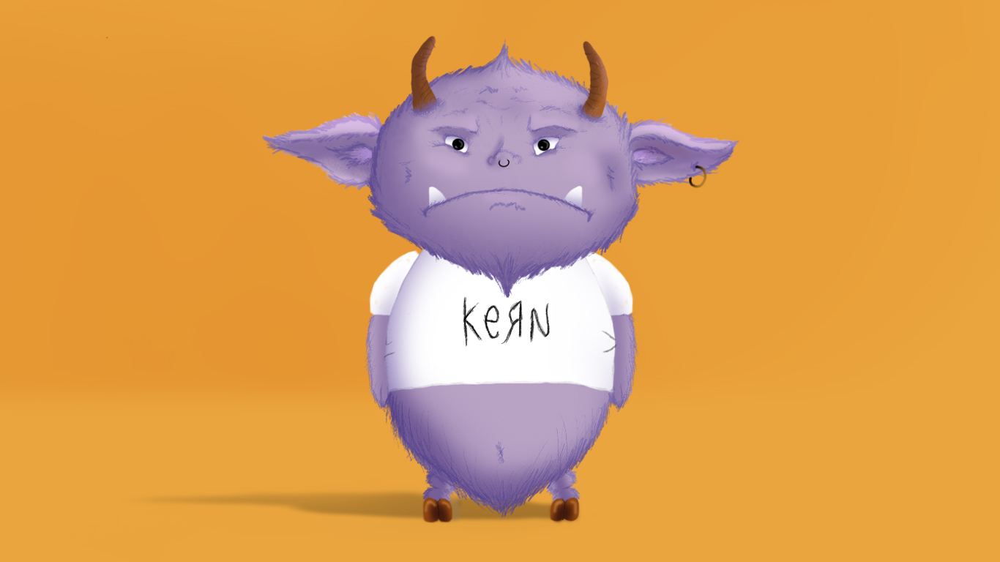

This project was planned to be built in two phases. Phase I was building my brand identify. After research of the current design landscape, and many iterations, I have landed on my finalized brand guidelines. These will serve not only as the brand identity for my graphic design business, but they will also serve as the inspiration for my motivational posters. Click below to scroll through the brand guidelines.
Phase II was developing Impo, my imposter syndrome monster. He is the representation of the inner voice in my head that doubts my abilities, says "you can't do that", or tells me I should not go for it. I know I am not the only one that feels this way as a new designer, so hopefully showing Impo to others we can talk about this and help to stop him.
Drawing inspiration from Yoda from "Star Wars", Ludo from "Labyrinth", and a little E.T., I wanted Impo to feel sinister, but still small and cute enough to be less intimidating. I believe the key to defeating him is finding humor in his existence and taking away his power. Click below to see sketches of how Impo came to life.
